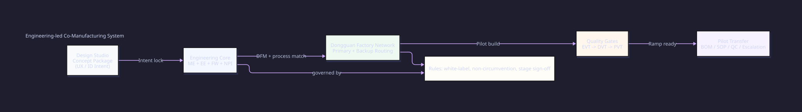

Company Profile
Cross-functional engineering and manufacturing execution team focused on build-to-print and NPI delivery.
About Us
Based in Hong Kong and Dongguan, we help design studios convert approved concept packages into manufacturable engineering systems and controlled pilot-to-ramp execution. We do not provide front-end design services.
Cross-functional engineering and manufacturing execution team focused on build-to-print and NPI delivery.
White-label collaboration for design studios with non-circumvention and role-boundary commitments.

Who We Are
After concept approval, many projects stall on engineering details, supplier alignment, and production readiness.
Our team uses stage-gated engineering delivery to reduce uncertainty while keeping the studio in the lead role.
Working Sequence
Step 01
Review intent, ID files, use-case constraints, and project priorities from the studio lead.
Step 02
Translate concept assets into structure, electronics, tolerance, material, and assembly logic.
Step 03
Run prototype rounds with DFM checks and supplier feedback to close production risks early.
Step 04
Deliver BOM, SOP, QC checkpoints, and escalation protocols for pilot execution and mass-production prep.
Project Types

Desktop, charging, wearable-adjacent, and compact utility products requiring electromechanical coordination.
Air, water, and everyday-use products where reliability and production consistency matter.
Projects where user interaction must be preserved while mechanism robustness is engineered for scale.
Studio-led projects that need controlled transition from prototype success to production reality.
Send your current project context. We will propose the right collaboration boundary and execution plan.